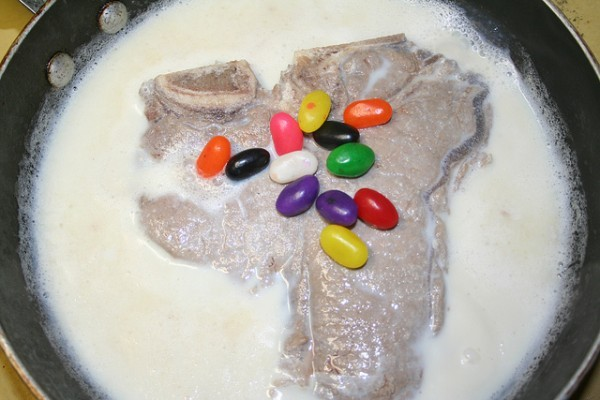

Milk Steak Recipe

Description
Charlie Kelley's favorite food:
A steak boiled in milk with aromatic spices and honey served with a jelly bean garnish
Ingredients
- 2 cups whole milk
- 1 16oz filet mignon
- 1 tbsp honey
- 1 tsp nutmeg
- 1/2 tsp vanilla
- 1/2 cup jelly beans to garnish
Steps
- Add the milk, honey, cinnamon, nutmeg, and vanilla to a medium sized saucepan.
- Heat up the mixture, stirring until the honey has completely dissolved.
- Bring the mixture to the boil.
- Carefully place the steak in the boiling milk mixture.
- Bring the liquid back to the boil and reduce the heat so that the milk is simmering.
- Cook for five minutes on one side, stirring the top occasionally to stop a skin forming on the milk.
- Turn the steak over and cook for a further five minutes on the other side.
- Garnish with jelly beans.